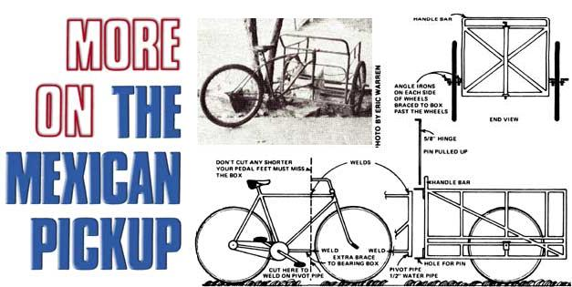

Since my last article-"Light Hauling on the Streets of Laredo"-appeared in MOTHER NO. 29 (page 39), I've been deluged with requests for more information on the construction of the Mexican pickup (a "backward" tricycle with a cargo carrier on its front).
All I can say is that the Mexicans who build these economical light hauling rigs use whatever parts they can scrounge, and put them together however they can. The typical "pickup" shows little evidence of welding, with components wired and lashed together in an unsightly manner. (Clearly, there's no "right" or "wrong" way to construct one of these people-powered hauling vehicles!)
The single thing all Mexican pickups have in common, it seems, is the way in which the trikes' frames are joined to their two-wheeled freight boxes. As a rule, each builder, cuts off the forward portion of an ordinary bicycle's horizontal framing tubes and welds a short length of pipe vertically to the front of the resulting stub frame. Then he inserts a 1/2" to 5/8" rod down through this pipe to serve as a steering hinge. (The rod, in turn, is held to the freight box via metal plates at top and bottom. See diagram.) Often, an extra brace tube is then added between the bottom of this "pivot pipe" and the original bike's crank housing.
Details of cargo box construction vary from one pickup to the next. Sometimes a pair of bicycle front ends (i.e., fork and wheel) are lashed or welded directly to the carrier's sides. On occasion, however, you'll see motorcycle-or even wheelbarrow-wheels mounted on a solid axle running beneath a machine's frame.
The Mexican pickup shown in the accompanying photo is the most elaborate I've ever run across. This rig's builder evidently had access to a tubing bender and knew something about good design. An attendant at the market where the vehicle is kept told me that the three-wheeler was originally a passenger carrier, but is now used to haul crates of fruit, take trash away, etc.
Perhaps (as with my last report) I've raised more questions than I've answered . . . but I hope this info has been of some additional help to Mexican pickup fans!
|
 |
|
|